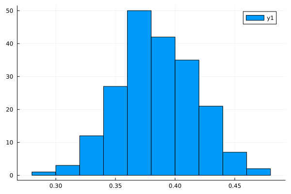

using Distributions, ForwardDiff, Optim, Random, LinearAlgebra, PlotsRecitation 3
Recitation 3
In this recitation we’ll do some maximum likelihood exercises using the simple probit model. First let’s write code to simulate data from this model and calculate the likelihood of the data given a set of parameters.
Recall that the probit model can be written as:
\[ Y_{n} = \mathbf{1}\{X_{n}\beta - \epsilon_{n} \geq 0 \},\ \epsilon\sim \mathcal{N}(0,1) \]
So it will be simple to simulate data from this model. We’ll assume that \(X_{n} = [1\ X_{n,1}\ X_{n,2}]\) where each \(X_{n,j}\) is distributed as a standard normal.
For no good reason other than that we want to explore the issues later on, suppose that the parameters \(\beta_{1},\beta_{2},\beta_{3}\) are a function of deeper structural parameters \(\gamma\):
\[ \beta_{1} = \exp(\gamma_{1}+\gamma_{2}), \beta_{2} = \gamma_{2}, \beta_{3} = \gamma_{1} \]
Below is code for simulating the data and calculating the log-likelihood given \(\beta\).
function simulate_probit(β,N)
F = Normal()
X = [ones(N) rand(F,N,2)]
eps = rand(F,N)
Y = (X * β .- eps) .> 0
return (Y,X)
end
function log_likelihood(n,Y,X,β,Fϵ)
@views xb = dot(X[n,:],β)
if Y[n]==1
return log(cdf(Fϵ,xb))
else
return log(1-cdf(Fϵ,xb))
end
end
function log_likelihood(Y,X,β)
ll = 0.
N = length(Y)
Fϵ = Normal()
for n in eachindex(Y)
ll += log_likelihood(n,Y,X,β,Fϵ)
end
return ll / N
endlog_likelihood (generic function with 2 methods)A Warning when Using Automatic Differentiation
For simple models you are unlikely to run into this issue, but for more complicated models you need to be careful when pre-allocating arrays in functions that you plan to differentiate “automatically”. Here is an example. Suppose we write the following function to get the reduced form coefficients \(\beta\) as a function of \(\gamma\):
function get_β_stupid(γ)
β = zeros(3)
β[1] = exp(γ[1]+γ[2])
β[2] = γ[2]
β[3] = γ[1]
return β
endget_β_stupid (generic function with 1 method)Let’s see what happens when we try to take the derivative of the log-likelihood with respect to \(\gamma\) using this function:
γ = [0.,0.2]
N = 200
β = get_β_stupid(γ)
Y,X = simulate_probit(β,N)
L(γ) = log_likelihood(Y,X,get_β_stupid(γ))
L(γ)-0.33713288149822374dL = ForwardDiff.gradient(L,γ)MethodError: no method matching Float64(::ForwardDiff.Dual{ForwardDiff.Tag{typeof(L), Float64}, Float64, 2})
Closest candidates are:
(::Type{T})(::Real, ::RoundingMode) where T<:AbstractFloat at rounding.jl:200
(::Type{T})(::T) where T<:Number at boot.jl:772
(::Type{T})(::AbstractChar) where T<:Union{AbstractChar, Number} at char.jl:50
...
Ok, we get an error! Why? When we pre-allocated the array \(\beta\) in the function get_β_stupid, using the zeros function, this asserts that the vector can only hold Float64 variables. When ForwardDiff attempts to take the derivative, it instead passes arguments that have a special Dual type that cannot be converted to a float. Here are two workarounds for this problem:
function get_β_sensible(γ)
β = zeros(eltype(γ),3) #<- we let the array take the same type as the argument γ
β[1] = exp(γ[1]+γ[2])
β[2] = γ[2]
β[3] = γ[1]
return β
end
function get_β_also_sensible(γ)
return [exp(γ[1]+γ[2]) γ[2] γ[1]]
end
L(γ) = log_likelihood(Y,X,get_β_sensible(γ))
L2(γ) = log_likelihood(Y,X,get_β_also_sensible(γ))
[L(γ) L2(γ)]1×2 Matrix{Float64}:
-0.337133 -0.337133[ForwardDiff.gradient(L,γ) ForwardDiff.gradient(L2,γ)]2×2 Matrix{Float64}:
0.0175352 0.0175352
0.024424 0.024424So now we have something we can pass to the optimizer and there will be no drama when taking derivatives.
N = 2_000
Y,X = simulate_probit(β,N)
r = optimize(x->-log_likelihood(Y,X,get_β_sensible(x)),γ,Newton(),autodiff=:forward,Optim.Options(show_trace=true))
γ_est = r.minimizer
γ_estIter Function value Gradient norm
0 3.436787e-01 1.513857e-02
* time: 5.0067901611328125e-5
1 3.435150e-01 1.481243e-04
* time: 0.0008308887481689453
2 3.435149e-01 5.684522e-09
* time: 0.00112795829772949222-element Vector{Float64}:
-0.004991197627244919
0.22372487257130555Estimating standard errors
In class we saw that for maximum likelihood:
\[ \sqrt{N}(\hat{\theta}-\theta_{0}) \rightarrow_{d} \mathcal{N}(0,-\mathbb{E}H(w,\theta_{0})^{-1}) \]
or alternatively:
\[ \sqrt{N}(\hat{\theta}-\theta_{0}) \rightarrow_{d} \mathcal{N}(0,\mathbb{E}[s(w,\theta_{0})s(w,\theta_{0})^{T}]^{-1}) \]
We can calculate standard errors by estimating either term. In the first case we just take the hessian of the average log-likelihood at the estimate. In the second we calculate the sample covariance of the score at the estimate. The law of large numbers guarantees that either approach is consistent.
# using the Hessian
H = ForwardDiff.hessian(x->log_likelihood(Y,X,get_β_sensible(x)),γ_est)
avar_est = -inv(H) 2×2 Matrix{Float64}:
1.64561 -1.02332
-1.02332 2.00287# using the score
S = hcat((ForwardDiff.gradient(x->log_likelihood(n,Y,X,get_β_sensible(x),Normal()),γ_est) for n in 1:N)...)
avar_est_2 = inv(cov(S'))2×2 Matrix{Float64}:
1.64537 -0.964128
-0.964128 1.89245Notice that the estimates are close to each other but not identical. They are only exactly equal in the population limit. To get standard errors, we note that \(\hat{\theta}\) is going to be approximately normally distributed around \(\theta\) with variance equal to the asymptotic variance divided by \(N\). So for example the standard errors for \(\gamma\) are:
se = sqrt.(diag(avar_est / N))2-element Vector{Float64}:
0.02868456117694807
0.03164541875055554Monte-Carlo Validation
Let’s validate the estimated variances using a monte-carlo simulation:
function monte_carlo(num_trials,γ,N)
γ_sim = zeros(2,num_trials)
β = get_β_sensible(γ)
for b in axes(γ_sim,2)
Y,X = simulate_probit(β,N)
r = optimize(x->-log_likelihood(Y,X,get_β_sensible(x)),γ,Newton(),autodiff=:forward)
γ_sim[:,b] = r.minimizer
end
return γ_sim
end
γ_sim = monte_carlo(200,γ,N)
var_sim = cov(γ_sim')
se_sim = sqrt.(diag(var_sim))2-element Vector{Float64}:
0.02941598344758601
0.03372272126529965Additional Exercises
Some questions for you to ponder.
Exercise 1
Suppose you estimate the \(\beta\) parameters directly. It would be simple enough to do here. How you could you then back out estimates of \(\gamma\) that would give you the same asymptotic variance as maximum likelihood? We will see how to do this when we study Optimal Minimum Distance
Exercise 2
Suppose we keep the same data-generating process, but that we misspecify the model as: \[ \beta = [\gamma_{1}+\gamma_{2},\ \gamma_{1},\ \gamma_{2}] \] The monte-carlo simulation below shows that the estimates of this misspecified model are still approximately normal. Which assumption is now violated and what formula for the asymptotic variance should we use instead for this pseudo-likelihood?
get_β_misspecified(γ) = [γ[1]+γ[2],γ[2],γ[1]]
function monte_carlo_misspecified(num_trials,γ,N)
γ_sim = zeros(2,num_trials)
β = get_β_sensible(γ)
for b in axes(γ_sim,2)
Y,X = simulate_probit(β,N)
r = optimize(x->-log_likelihood(Y,X,get_β_misspecified(x)),γ,Newton(),autodiff=:forward)
γ_sim[:,b] = r.minimizer
end
return γ_sim
end
γ_sim = monte_carlo_misspecified(200,γ,N)
histogram(γ_sim[1,:])